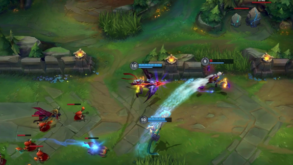
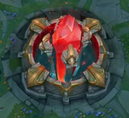
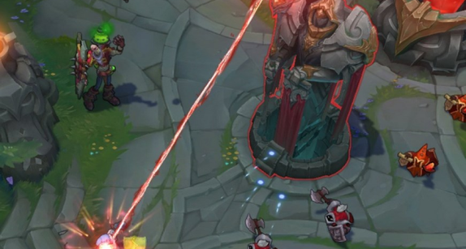

League of Legends est un jeu de stratégie en équipe dans lequel deux équipes de cinq champions s'affrontent pour détruire la base adverse. Faites votre choix parmi plus de 140 champions disponibles, partez au combat, éliminez vos adversaires avec adresse et abattez les tourelles ennemies pour décrocher la victoire.
League of legends


Gameplay

DÉTRUIRE LA BASE
Le Nexus est le cœur de la base de chaque équipe. Détruisez le Nexus ennemi en premier pour remporter la partie.

SE FRAYER UN CHEMIN
Votre équipe doit détruire toutes les défenses d'au moins une voie pour pouvoir atteindre le Nexus ennemi. Ces structures défensives qui bloquent votre route sont appelées des tourelles et des inhibiteurs. Chaque voie possède trois tourelles et un inhibiteur, et chaque Nexus est gardé par deux tourelles.